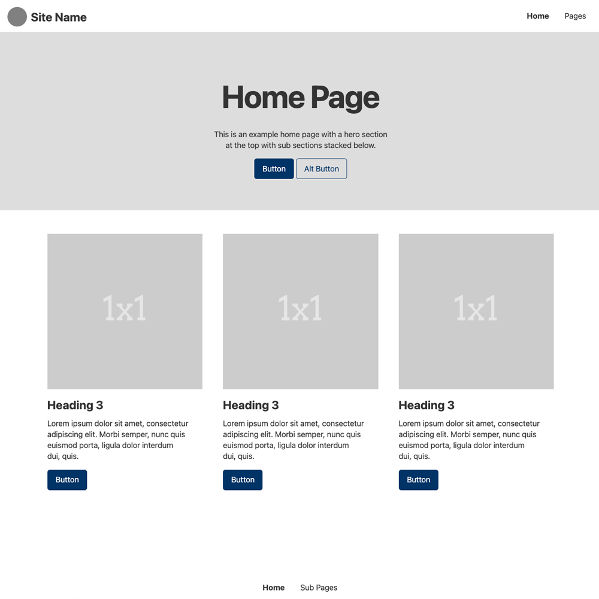
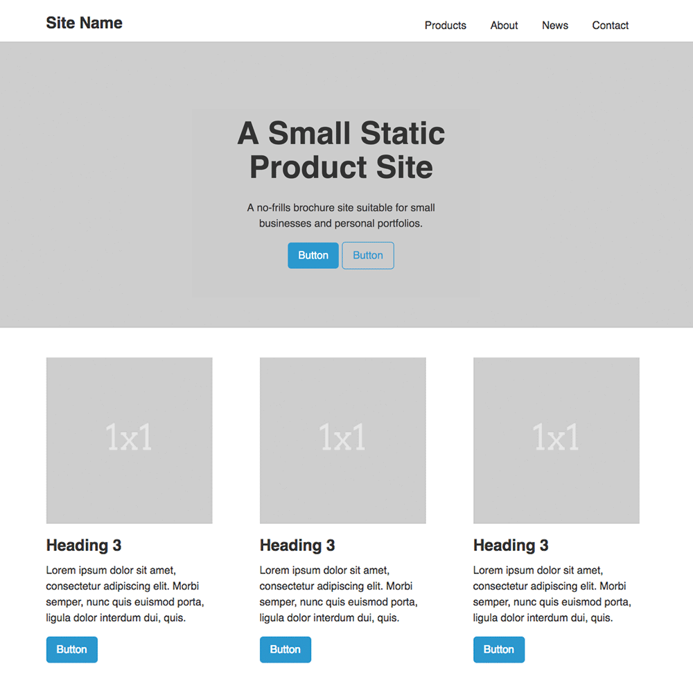
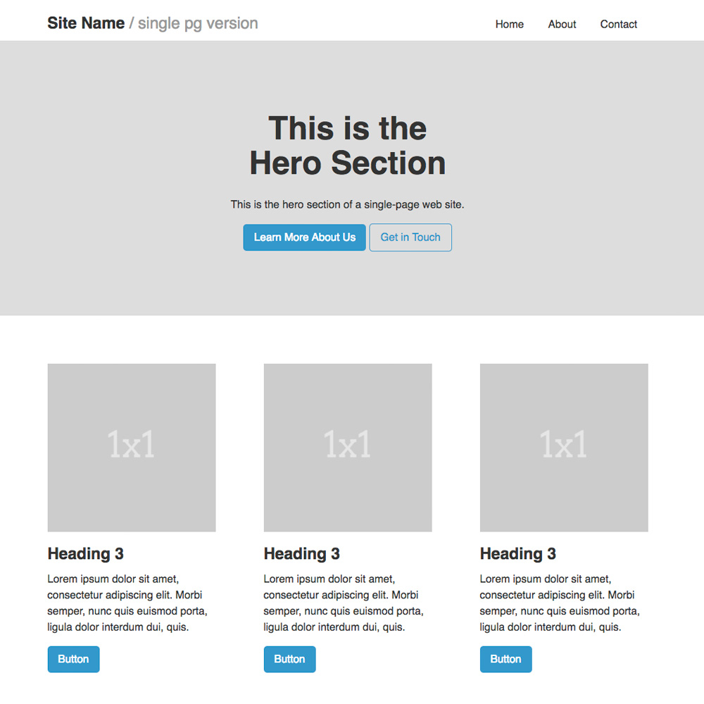
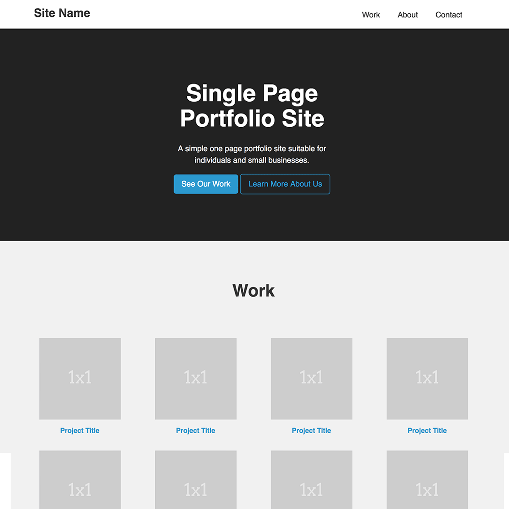
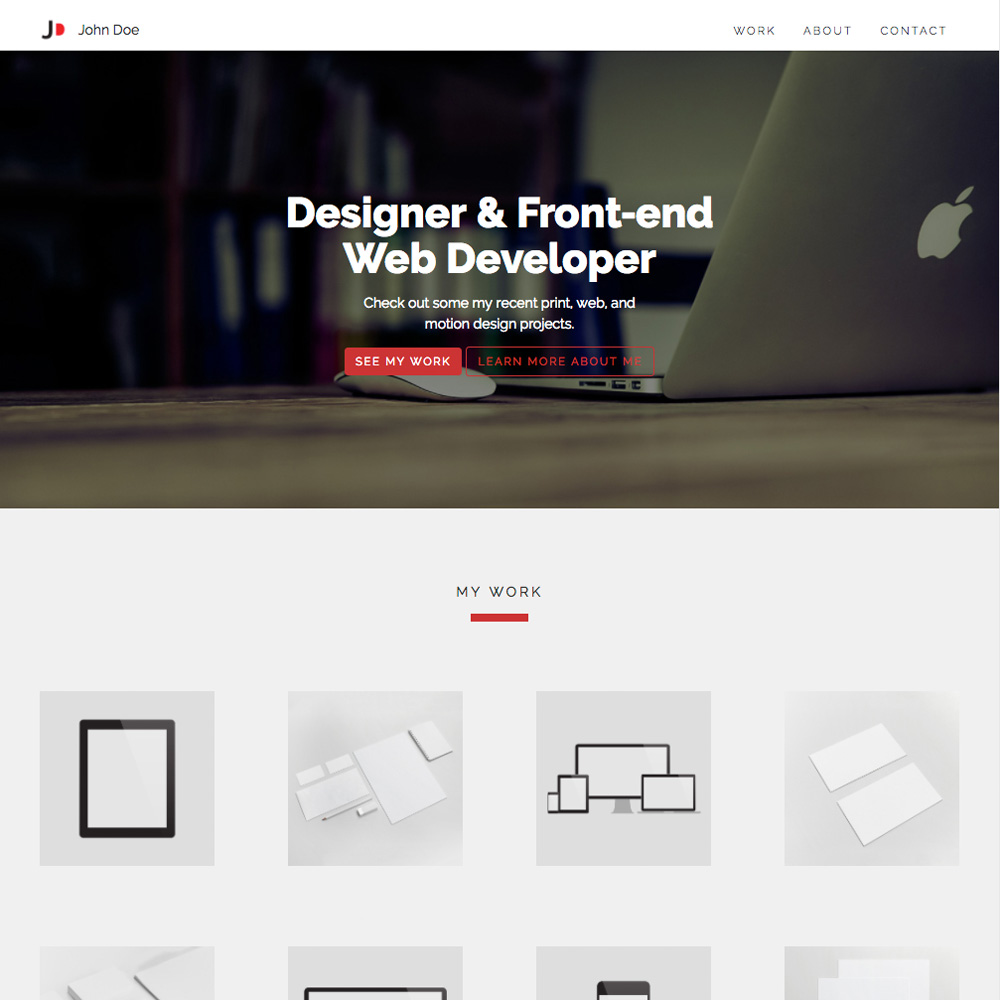

SiteBase Examples
In addition to the bare bare-bones SiteBase demo, the following are basic examples of how SiteBase can be used in applied contexts.
-

SiteBase Basic Pages
A bare-bones demo of SiteBase with some standard page layouts as examples.
-

A Simple Product Site
A no-frills, small static product site suitable for small businesses and personal portfolios.
-

A Single Page Site
A simple base for a small single page site suitable for small businesses and personal sites.
-

A Single Page Portfolio
A simple one page portfolio site suitable for individuals and small businesses.
-

A Custom Single Page Portfolio
A simple one page portfolio site with some custom styling.